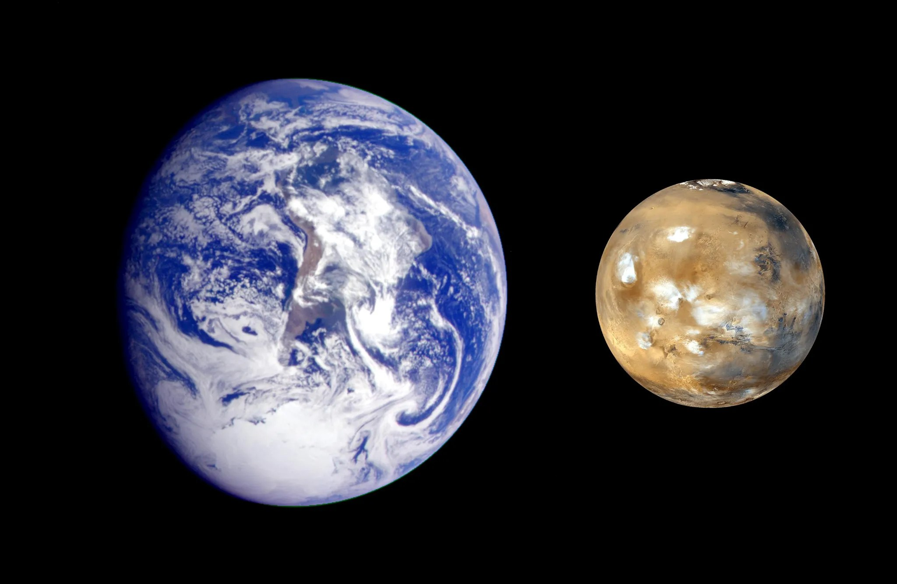

Mars

Overview
Mars is the fourth planet from the Sun and is known as the Red Planet because iron minerals in its soil have rusted. It is a cold desert world about half the size of Earth, with a thin atmosphere made mostly of carbon dioxide. Mars has seasons, polar ice caps, and the remains of ancient riverbeds, which suggest liquid water once flowed on its surface. Today it is one of the most explored planets, with rovers like Perseverance searching for signs of past life.
Interesting Facts
- Mars has the largest volcano in the solar system, Olympus Mons, about three times taller than Mount Everest.
- Mars has two small moons, Phobos and Deimos.
Quick Facts
- Type: Rocky Planet
- Distance from Earth: 33.9-249.4 million miles
- Size: 4,220 miles in diameter
- Discovery: Known since the ancient times, Galileo first viewed it through a telescope in 1610.